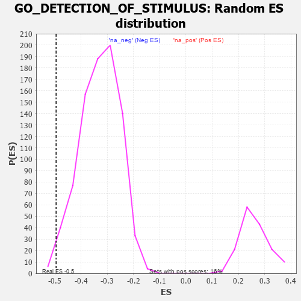

| | | Dataset | 7d |
| Phenotype | NoPhenotypeAvailable |
| Upregulated in class | na_neg |
| GeneSet | GO_DETECTION_OF_STIMULUS |
| Enrichment Score (ES) | -0.4947566 |
| Normalized Enrichment Score (NES) | -1.5053786 |
| Nominal p-value | 0.009467456 |
| FDR q-value | 0.18431938 |
| FWER p-Value | 1.0 |
Table: GSEA Results Summary
 Fig 1: Enrichment plot: GO_DETECTION_OF_STIMULUS
Fig 1: Enrichment plot: GO_DETECTION_OF_STIMULUS
Profile of the Running ES Score & Positions of GeneSet Members on the Rank Ordered List
| PROBE | GENE SYMBOL | GENE_TITLE | RANK IN GENE LIST | RANK METRIC SCORE | RUNNING ES | CORE ENRICHMENT | | 1 | TGFB3 | | | 49 | 2.654 | 0.0399 | No |
| 2 | RTP3 | | | 121 | 1.425 | 0.0557 | No |
| 3 | CSRP3 | | | 161 | 1.186 | 0.0713 | No |
| 4 | FOXF1 | | | 176 | 1.136 | 0.0893 | No |
| 5 | RGR | | | 303 | 0.814 | 0.0875 | No |
| 6 | RFC2 | | | 488 | 0.635 | 0.0752 | No |
| 7 | EYS | | | 654 | 0.575 | 0.0644 | No |
| 8 | RFC3 | | | 663 | 0.571 | 0.0733 | No |
| 9 | RFC4 | | | 815 | 0.528 | 0.0633 | No |
| 10 | RPA1 | | | 817 | 0.527 | 0.0723 | No |
| 11 | RPA2 | | | 851 | 0.519 | 0.0772 | No |
| 12 | WDR48 | | | 975 | 0.489 | 0.0701 | No |
| 13 | YAP1 | | | 1041 | 0.475 | 0.0702 | No |
| 14 | FNTB | | | 1270 | 0.436 | 0.0489 | No |
| 15 | DRGX | | | 1378 | 0.414 | 0.0425 | No |
| 16 | RBX1 | | | 1445 | 0.401 | 0.0412 | No |
| 17 | DACH1 | | | 1471 | 0.395 | 0.0449 | No |
| 18 | DDB1 | | | 1642 | 0.366 | 0.0297 | No |
| 19 | BACE1 | | | 1673 | 0.360 | 0.0322 | No |
| 20 | DTL | | | 2154 | 0.284 | -0.0236 | No |
| 21 | TLR1 | | | 2517 | 0.224 | -0.0655 | No |
| 22 | FNTA | | | 2755 | 0.190 | -0.0922 | No |
| 23 | NMT2 | | | 2947 | 0.158 | -0.1136 | No |
| 24 | ANO1 | | | 2982 | 0.152 | -0.1152 | No |
| 25 | CUL4A | | | 3097 | 0.137 | -0.1273 | No |
| 26 | OR5B2 | | | 3173 | 0.126 | -0.1346 | No |
| 27 | RFC5 | | | 3389 | 0.091 | -0.1602 | No |
| 28 | RFC1 | | | 3437 | 0.085 | -0.1647 | No |
| 29 | WDR47 | | | 3823 | 0.023 | -0.2130 | No |
| 30 | PARP1 | | | 4014 | -0.010 | -0.2368 | No |
| 31 | PDX1 | | | 4179 | -0.038 | -0.2569 | No |
| 32 | REEP6 | | | 4441 | -0.084 | -0.2885 | No |
| 33 | PNKP | | | 4572 | -0.111 | -0.3030 | No |
| 34 | SMO | | | 5195 | -0.247 | -0.3774 | No |
| 35 | SCN1A | | | 5260 | -0.261 | -0.3809 | No |
| 36 | TLR2 | | | 5761 | -0.395 | -0.4373 | No |
| 37 | CNGA1 | | | 5931 | -0.445 | -0.4510 | No |
| 38 | TRPC3 | | | 6035 | -0.483 | -0.4556 | No |
| 39 | NR2E3 | | | 6048 | -0.488 | -0.4487 | No |
| 40 | UBB | | | 6090 | -0.503 | -0.4451 | No |
| 41 | STIM1 | | | 6169 | -0.528 | -0.4458 | No |
| 42 | NEK1 | | | 6402 | -0.618 | -0.4644 | No |
| 43 | OTOP1 | | | 6562 | -0.690 | -0.4726 | No |
| 44 | PAK1 | | | 6691 | -0.757 | -0.4756 | No |
| 45 | TRPM8 | | | 6781 | -0.800 | -0.4730 | No |
| 46 | ABCA4 | | | 6872 | -0.851 | -0.4696 | No |
| 47 | OPN4 | | | 7072 | -0.978 | -0.4778 | Yes |
| 48 | WHRN | | | 7139 | -1.025 | -0.4683 | Yes |
| 49 | SYT1 | | | 7148 | -1.033 | -0.4514 | Yes |
| 50 | PTPRJ | | | 7180 | -1.054 | -0.4370 | Yes |
| 51 | TSPO | | | 7194 | -1.065 | -0.4202 | Yes |
| 52 | CNGB1 | | | 7222 | -1.096 | -0.4045 | Yes |
| 53 | UBC | | | 7410 | -1.274 | -0.4061 | Yes |
| 54 | TRPM3 | | | 7544 | -1.461 | -0.3975 | Yes |
| 55 | GRIK2 | | | 7552 | -1.471 | -0.3729 | Yes |
| 56 | CALM1 | | | 7567 | -1.499 | -0.3486 | Yes |
| 57 | BEST1 | | | 7601 | -1.554 | -0.3258 | Yes |
| 58 | TRPA1 | | | 7625 | -1.608 | -0.3008 | Yes |
| 59 | PKD1 | | | 7628 | -1.611 | -0.2731 | Yes |
| 60 | CST1 | | | 7692 | -1.746 | -0.2507 | Yes |
| 61 | PKD2 | | | 7822 | -2.167 | -0.2294 | Yes |
| 62 | CALM3 | | | 7869 | -2.525 | -0.1914 | Yes |
| 63 | FYN | | | 7881 | -2.622 | -0.1472 | Yes |
| 64 | CAV3 | | | 7896 | -2.739 | -0.1014 | Yes |
| 65 | ASIC2 | | | 7917 | -2.995 | -0.0519 | Yes |
| 66 | ARRB1 | | | 7935 | -3.377 | 0.0046 | Yes |
Table: GSEA details [plain text format]

Fig 2: GO_DETECTION_OF_STIMULUS: Random ES distribution
Gene set null distribution of ES for GO_DETECTION_OF_STIMULUS